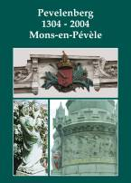

> publicaties >
Pevelenberg
Mons-en-Pévèle 1304-2004
Op 18 augustus 1304 wegen op het Vlaanderland rond de Pevelenberg de hondsdagen op strijdende troepen, die een bloedbad achterlaten in een strijd van door, leven en overleven. In 2004 brullen de kanonnen niet meer, en is het mitrailleursgeratel weggeëbd. Er is ruimte gekomen voor de dialoog in het grootste deel van ons dierbaar Europa.
Wordt hier geen enige gelegenheid
geboden om met meer openheid van geest de geschiedenis te schrijven of te
herschrijven van een land of een natie, die door de enen wordt opgehemeld en
door anderen verguisd.
Deze brochure kadert binnen een voornemen om een belangrijke episode van
onze gemeenschappelijke heel-Nederlandse geschiedenis binnen Vlaanderen, de
Nederlanden en Frankrijk te belichten. Op ons verzoek hebben zes liefhebbers van
geschiedenis een bijdrage geleverd om de schijnwerper te richten op één of
meerdere facetten van de slag, die volgens hen een beslissende rol hebben
gespeeld in het verloop van de gebeurtenissen.
Joris de Sutter, uit Brugge, is voorzitter van de Liebaart, een vereniging die de middeleeuwen echt doet herleven. Jan van Tongeren, uit Maarssen bij Utrecht, hanteert de voorzittershamer van een geschiekundige vereniging Oud Amsterdam, hij is tevens vice-voorzitter van de Stichting Zannekin. Chantal Brisabois behartigt als schepen van de stad Dowaai, de internationale betrekkingen. Olivier Cornille, leraar uit Pevelenberg, wil de jongeren blijven boeien voor geschiedenis. Gérard Hugot, uit Seclin, auteur van een volumineus boek over de slag, koestert een bijzondere belangstelling voor de gebeurtenissen van het begin der 14e eeuw. Jean-Claude Marquis, burgemeester van Pevelenberg, draagt zijn steentje bij tot de vrede en de vriendschap in Vlaanderen.
|
omvang
|
80 pagina's |
|
ISBN
|
90-71326-22-5 |
|
prijs leden (inclusief verzendingskosten)
|
5,00 |
|
prijs niet-leden (exclusief verzendingskosten)
|
10,00 |